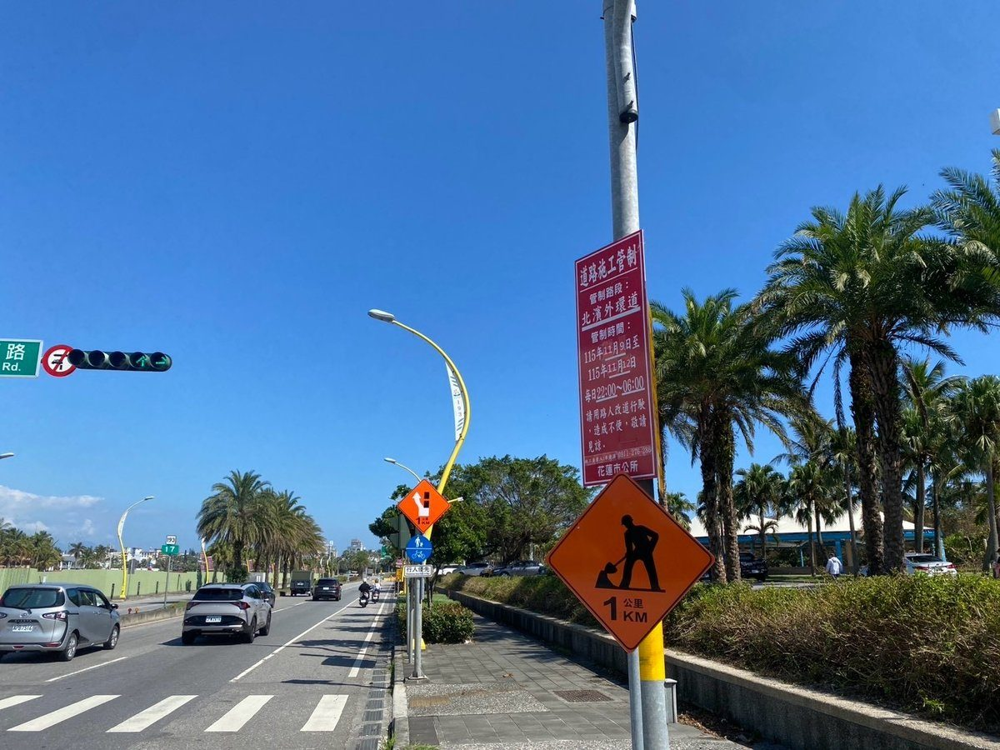

北濱外環道照明升級 9日起夜間分段管制三天

可樂電子報小編/編輯
花蓮市公所為改善夜間行車環境，將辦理北濱外環道照明設施更換作業。工程自11月9日起連續三個夜晚進行，每晚10時至隔日清晨6時實施全面交通管制，最後一夜管制到11月12日清晨6時結束，之後恢復正常通行。市公所提醒駕駛人預先規劃替代路線，避免行程受到影響，也請留意現場公告。

市公所指出，道路照明是維護夜間行車安全的重要設施，燈具老化或亮度不足，容易讓駕駛人看不清車道線、路肩與行人動向，尤其夜間光線昏暗時，路面標線與路側障礙物更容易被忽略，照明品質直接關係到駕駛人的反應時間。此次針對北濱外環道全面更換照明設備與燈具，希望提升整體照明品質與夜間辨識度。

市公所強調，照明改善後可延長駕駛人的可視距離，對夜間騎乘機車與步行的民眾更有保障。工程時段安排在夜間，主要考量白天車流量較大，若佔用車道施工，容易造成回堵，也可能影響救護、消防等緊急車輛通行，因此集中人力與機具加速作業，並在施工前完成交通維持與安全防護規劃，依現場狀況彈性調度，避免長時間佔用道路。

本次交通管制分為三個夜間時段，分別是11月9日晚間10時至10日清晨6時、10日晚間10時至11日清晨6時，以及11日晚間10時至12日清晨6時。市公所請經常行經北濱外環道的民眾提前留意管制時間，妥善安排出行時間與替代路線，避開封閉路段，並把資訊轉知經常夜歸的家人。
市公所提醒，駕駛人行經施工路段周邊務必減速慢行，注意現場擺設的交通管制標誌、警示燈與引導人員指揮，切勿貪快闖入封閉施工區域，以免發生危險。施工期間造成通行不便，敬請市民體諒與配合，共同維護交通秩序及施工安全，施工團隊也會盡力縮短作業時間，把影響降到最低。也請民眾配合現場人員引導，不要為了搶快跨越管制線。
🌟 掌握花蓮在地第一手資訊・歡迎訂閱追蹤
深度紀實報導、在地精采影音專題，第一時間接收最新消息！